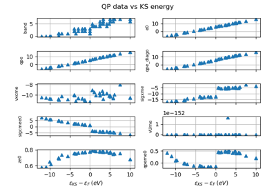
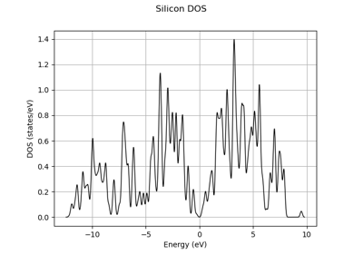
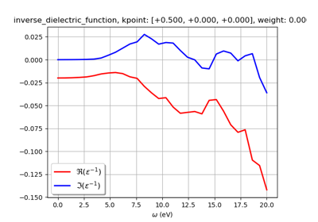
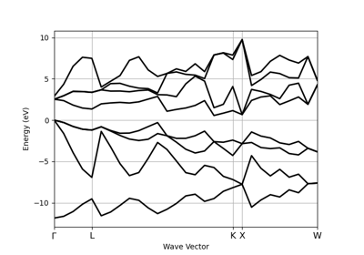
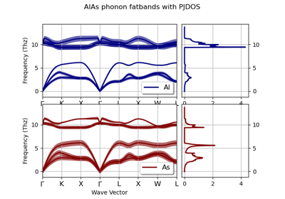
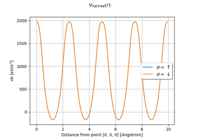
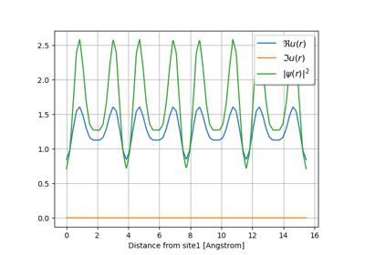
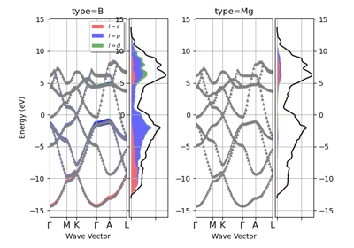

AbiPy Gallery¶
There are a variety of ways to use the AbiPy post-processing tools, and most of them are illustrated in the examples in this directory.
Remember that one can also generate a jupyter notebook directly from the command line with the abiopen.py script and the command:
abiopen.py FILE -nb
or use one of the options of abiview.py to plot the results automatically.
















